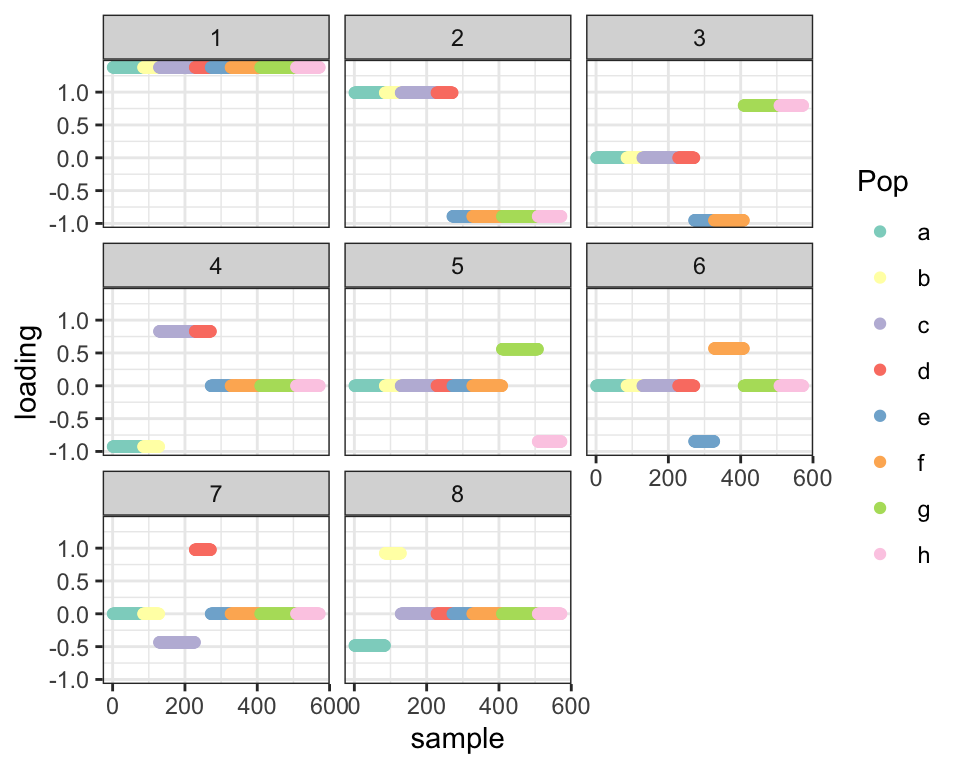
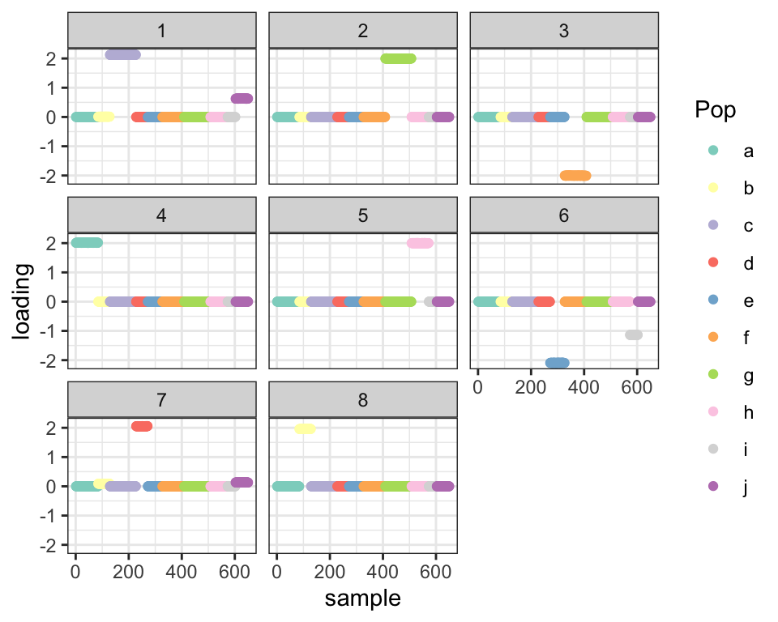
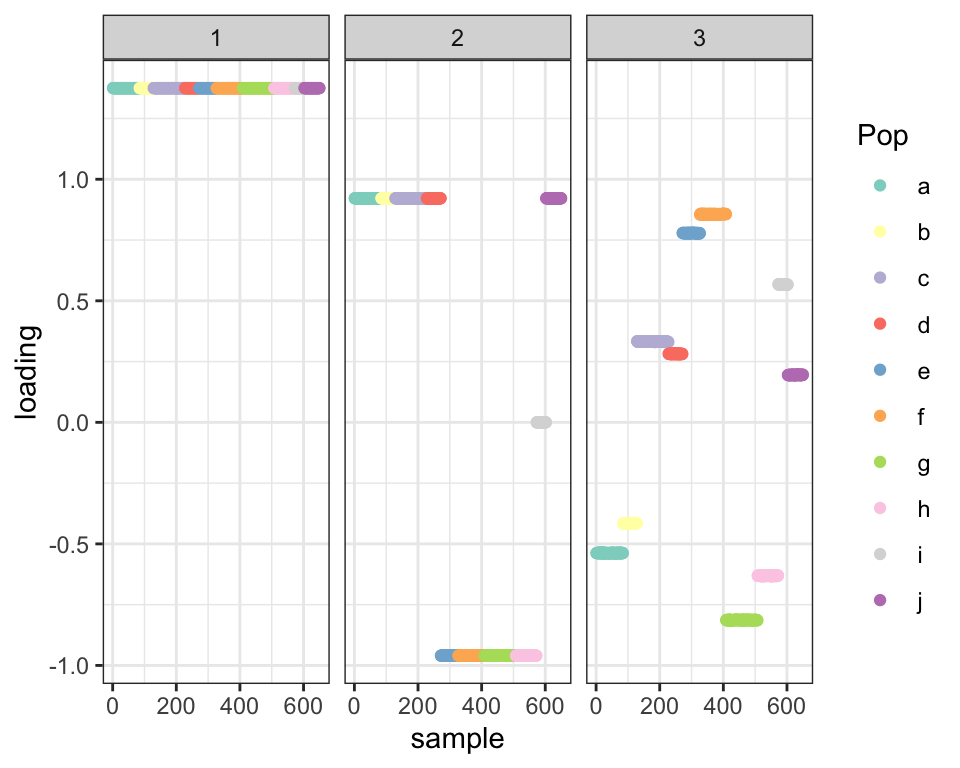
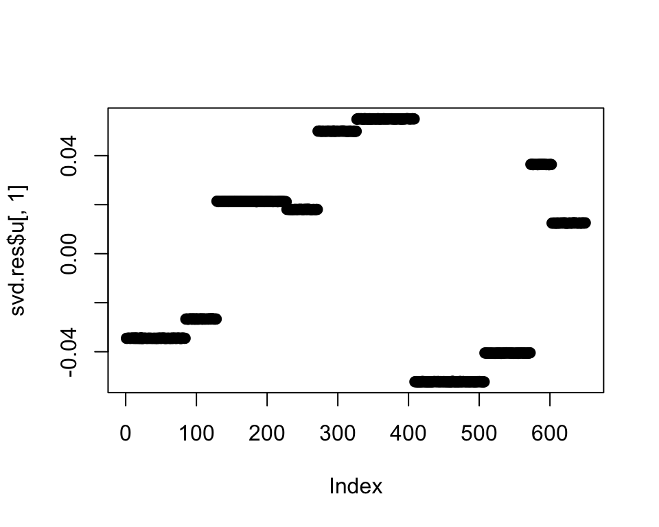
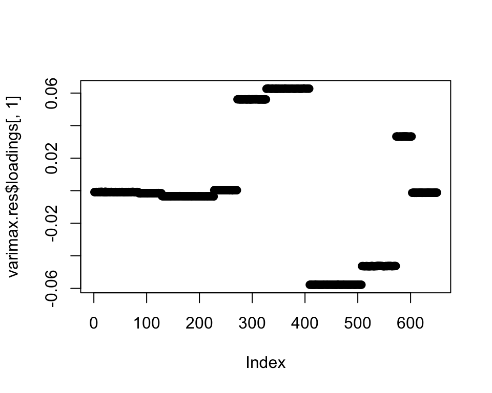
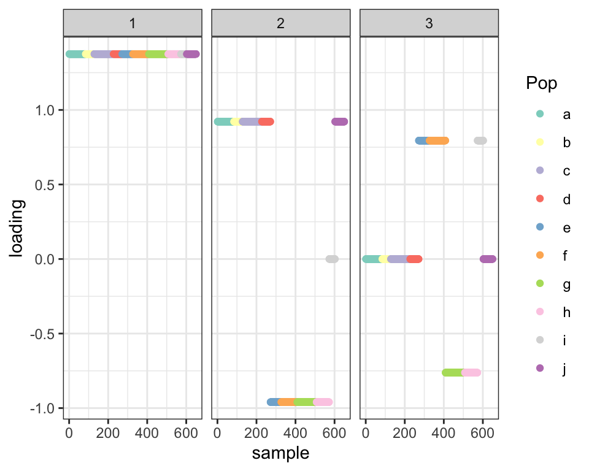
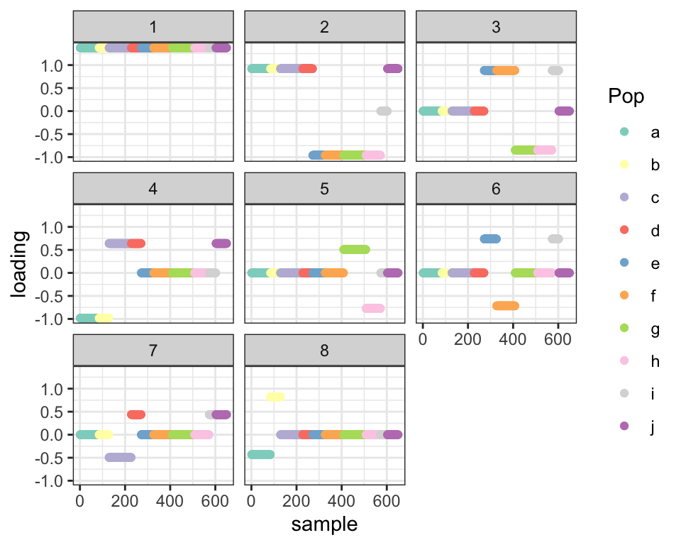
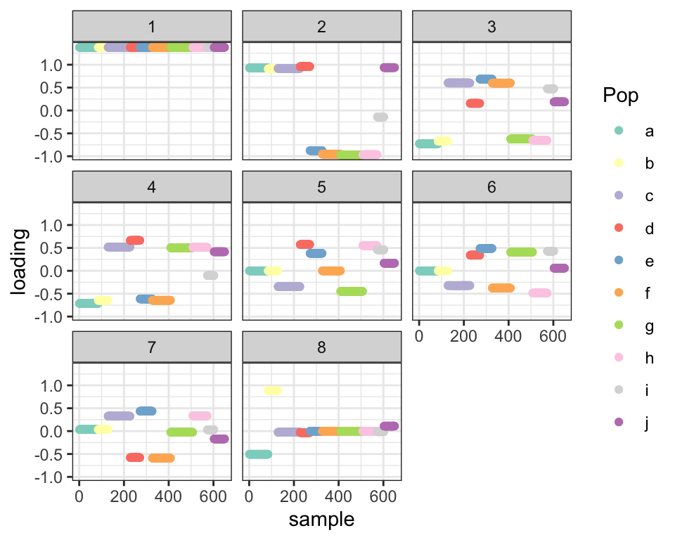

Revisiting prior families for trees: Part VII
Jason Willwerscheid
7/22/2020
Last updated: 2020-08-09
Checks: 6 0
Knit directory: drift-workflow/analysis/
This reproducible R Markdown analysis was created with workflowr (version 1.2.0). The Report tab describes the reproducibility checks that were applied when the results were created. The Past versions tab lists the development history.
Great! Since the R Markdown file has been committed to the Git repository, you know the exact version of the code that produced these results.
Great job! The global environment was empty. Objects defined in the global environment can affect the analysis in your R Markdown file in unknown ways. For reproduciblity it’s best to always run the code in an empty environment.
The command set.seed(20190211) was run prior to running the code in the R Markdown file. Setting a seed ensures that any results that rely on randomness, e.g. subsampling or permutations, are reproducible.
Great job! Recording the operating system, R version, and package versions is critical for reproducibility.
Nice! There were no cached chunks for this analysis, so you can be confident that you successfully produced the results during this run.
Great! You are using Git for version control. Tracking code development and connecting the code version to the results is critical for reproducibility. The version displayed above was the version of the Git repository at the time these results were generated.
Note that you need to be careful to ensure that all relevant files for the analysis have been committed to Git prior to generating the results (you can use wflow_publish or wflow_git_commit). workflowr only checks the R Markdown file, but you know if there are other scripts or data files that it depends on. Below is the status of the Git repository when the results were generated:
Ignored files:
Ignored: .DS_Store
Ignored: .Rhistory
Ignored: .Rproj.user/
Ignored: docs/.DS_Store
Ignored: docs/assets/.DS_Store
Ignored: output/
Untracked files:
Untracked: analysis/extrapolate3.Rmd
Untracked: analysis/extrapolate4.Rmd
Untracked: analysis/pm1_priors8.Rmd
Unstaged changes:
Modified: drift-workflow.Rproj
Note that any generated files, e.g. HTML, png, CSS, etc., are not included in this status report because it is ok for generated content to have uncommitted changes.
These are the previous versions of the R Markdown and HTML files. If you’ve configured a remote Git repository (see ?wflow_git_remote), click on the hyperlinks in the table below to view them.
| File | Version | Author | Date | Message |
|---|---|---|---|---|
| Rmd | 7a5e6bc | Jason Willwerscheid | 2020-08-09 | workflowr::wflow_publish(“analysis/pm1_priors7.Rmd”) |
| html | 0ee7225 | Jason Willwerscheid | 2020-08-07 | Build site. |
| Rmd | 9a91909 | Jason Willwerscheid | 2020-08-07 | workflowr::wflow_publish(“analysis/pm1_priors7.Rmd”) |
suppressMessages({
library(flashier)
library(drift.alpha)
library(tidyverse)
})The purpose of this analysis is to experiment with the family of “three-pointmass priors” with mass on \(-a\), \(0\), and \(b\).
I use the balanced tree from the previous analysis.
set.seed(666)
p <- 10000
resid_sd <- 0.1
# Define tree by mean branch length at each depth:
branch_means <- rep(1, 4)
branch_sds <- rep(0, 4)
depth <- length(branch_means)
npop_pure <- 2^(depth - 1)
# Define admixtures by admixture proportions:
admix_pops <- matrix(nrow = 0, ncol = 0)
npop_admix <- ncol(admix_pops)
npop <- npop_pure + npop_admix
n <- sample(30:100, npop, replace = TRUE)
# n <- rep(50, npop)
K <- 2^depth - 1
FF <- matrix(nrow = p, ncol = K)
k <- 1
for (d in 1:depth) {
for (i in 1:(2^(d - 1))) {
FF[, k] <- rnorm(p, sd = branch_means[d] + rnorm(1, sd = branch_sds[d]))
k <- k + 1
}
}
tree_mat <- matrix(0, nrow = npop_pure, ncol = K)
k <- 1
for (d in 1:depth) {
size <- 2^(depth - d)
for (i in 1:(2^(d - 1))) {
tree_mat[((i - 1) * size + 1):(i * size), k] <- 1
k <- k + 1
}
}
pop_means <- FF %*% t(tree_mat)
if (npop_admix > 0) {
pop_means <- cbind(pop_means, pop_means %*% admix_pops)
}
Y <- NULL
for (i in 1:npop) {
Y <- rbind(Y, matrix(pop_means[, i], nrow = n[i], ncol = p, byrow = TRUE))
}
Y <- Y + rnorm(sum(n) * p, sd = resid_sd)
plot_dr <- function(dr) {
sd <- sqrt(dr$prior_s2)
L <- dr$EL
LDsqrt <- L %*% diag(sd)
K <- ncol(LDsqrt)
plot_loadings(LDsqrt[,1:K], rep(letters[1:npop], n)) +
scale_color_brewer(palette="Set3")
}
threepm.fn = function(x, s, g_init, fix_g, output, ...) {
if (is.null(g_init)) {
nllik_given_ab <- function(par) {
g_init <- ashr::unimix(rep(1/3, 3), a = c(-par[1], 0, par[2]), b = c(-par[1], 0, par[2]))
ebnm_res <- ebnm::ebnm_ash(x, s, g_init = g_init)
return(-ebnm_res$log_likelihood)
}
opt_res <- optim(
par = c(1, 1),
fn = nllik_given_ab,
method = "L-BFGS-B",
lower = c(0, 0),
upper = c(Inf, Inf)
)
par <- opt_res$par
g_init <- ashr::unimix(rep(1/3, 3), a = c(-par[1], 0, par[2]), b = c(-par[1], 0, par[2]))
}
return(flashier:::ebnm.nowarn(x = x,
s = s,
g_init = g_init,
fix_g = fix_g,
output = output,
prior_family = "ash",
prior = c(1, 1, 1),
...))
}
prior.threepm = function(...) {
return(as.prior(sign = 0, ebnm.fn = function(x, s, g_init, fix_g, output) {
threepm.fn(x, s, g_init, fix_g, output, ...)
}))
}
flexpm.fn = function(x, s, g_init, fix_g, output, ...) {
if (is.null(g_init)) {
nllik_given_ab <- function(par) {
g_init <- ashr::unimix(rep(1/4, 4), a = c(-par[1], 0, par[2], -par[1]), b = c(-par[1], 0, par[2], par[2]))
ebnm_res <- ebnm::ebnm_ash(x, s, g_init = g_init)
return(-ebnm_res$log_likelihood)
}
opt_res <- optim(
par = c(1, 1),
fn = nllik_given_ab,
method = "L-BFGS-B",
lower = c(0, 0),
upper = c(Inf, Inf)
)
par <- opt_res$par
g_init <- ashr::unimix(rep(1/4, 4), a = c(-par[1], 0, par[2], -par[1]), b = c(-par[1], 0, par[2], par[2]))
}
return(flashier:::ebnm.nowarn(x = x,
s = s,
g_init = g_init,
fix_g = fix_g,
output = output,
prior_family = "ash",
prior = c(1, 1, 1, 1),
...))
}
prior.flexpm = function(...) {
return(as.prior(sign = 0, ebnm.fn = function(x, s, g_init, fix_g, output) {
threepm.fn(x, s, g_init, fix_g, output, ...)
}))
}
init.mean.factor <- function(resids, zero.idx) {
u <- matrix(1, nrow = nrow(resids), ncol = 1)
u[zero.idx, 1] <- 0
v <- t(solve(crossprod(u), crossprod(u, resids)))
return(list(u, v))
}
init.split.factor <- function(resids, zero.idx) {
svd.res <- svd(resids, nu = 1, nv = 1)
u <- svd.res$u
u[zero.idx] <- 0
u <- matrix(sign(u), ncol = 1)
v <- t(solve(crossprod(u), crossprod(u, resids)))
return(list(u, v))
}With no admixtures, flash finds the tree:
fl <- flash.init(Y) %>%
flash.set.verbose(0) %>%
flash.init.factors(EF = init.mean.factor(Y, NULL),
prior.family = c(prior.threepm(), prior.normal())) %>%
flash.fix.loadings(kset = 1, mode = 1L) %>%
flash.backfit() %>%
flash.add.greedy(Kmax = npop_pure - 1,
prior.family = c(prior.threepm(), prior.normal()))
plot_dr(init_from_flash(fl))
| Version | Author | Date |
|---|---|---|
| 0ee7225 | Jason Willwerscheid | 2020-08-07 |
If, however, I add in some admixed populations, the splits are all jumbled:
set.seed(666)
p <- 10000
resid_sd <- 0.1
# Define tree by mean branch length at each depth:
branch_means <- rep(1, 4)
branch_sds <- rep(0, 4)
depth <- length(branch_means)
npop_pure <- 2^(depth - 1)
# Define admixtures by admixture proportions:
admix_pops <- cbind(c(0, 0, 0, 0.4, 0.6, 0, 0, 0),
c(0, 0.15, 0.35, 0.5, 0, 0, 0, 0))
npop_admix <- ncol(admix_pops)
npop <- npop_pure + npop_admix
n <- sample(30:100, npop, replace = TRUE)
# n <- rep(50, npop)
K <- 2^depth - 1
FF <- matrix(nrow = p, ncol = K)
k <- 1
for (d in 1:depth) {
for (i in 1:(2^(d - 1))) {
FF[, k] <- rnorm(p, sd = branch_means[d] + rnorm(1, sd = branch_sds[d]))
k <- k + 1
}
}
tree_mat <- matrix(0, nrow = npop_pure, ncol = K)
k <- 1
for (d in 1:depth) {
size <- 2^(depth - d)
for (i in 1:(2^(d - 1))) {
tree_mat[((i - 1) * size + 1):(i * size), k] <- 1
k <- k + 1
}
}
pop_means <- FF %*% t(tree_mat)
if (npop_admix > 0) {
pop_means <- cbind(pop_means, pop_means %*% admix_pops)
}
Y <- NULL
for (i in 1:npop) {
Y <- rbind(Y, matrix(pop_means[, i], nrow = n[i], ncol = p, byrow = TRUE))
}
Y <- Y + rnorm(sum(n) * p, sd = resid_sd)
fl <- flash.init(Y) %>%
flash.set.verbose(0) %>%
flash.init.factors(EF = init.mean.factor(Y, NULL),
prior.family = c(prior.threepm(), prior.normal())) %>%
flash.fix.loadings(kset = 1, mode = 1L) %>%
flash.backfit() %>%
flash.add.greedy(Kmax = npop_pure - 1,
prior.family = c(prior.threepm(), prior.normal()))
plot_dr(init_from_flash(fl))
| Version | Author | Date |
|---|---|---|
| 0ee7225 | Jason Willwerscheid | 2020-08-07 |
It’s likely that I simply got lucky in the previous analysis and unlucky here. We’ll need a better way to encourage sparsity in the later splits.
Sparse PCA
First I look at how sparse PCA does (using package sparsepca). It mostly just clusters populations – there’s no evidence of a tree-like structure here.
library(sparsepca)
spca.t <- system.time(spca.res <- spca(t(Y), k = 8, max_iter = 10000, verbose = FALSE))
plot_dr(init_from_EL(Y, spca.res$loadings))
Flash with point-normal priors
Next I try flash with a more sparsity-inducing family of priors. I only fit up to the third factor since that’s where the problems begin.
fl2 <- flash.init(Y) %>%
flash.set.verbose(0) %>%
flash.init.factors(EF = init.mean.factor(Y, NULL),
prior.family = c(prior.threepm(), prior.normal())) %>%
flash.fix.loadings(kset = 1, mode = 1L) %>%
flash.backfit() %>%
flash.add.greedy(Kmax = 1, prior.family = c(prior.threepm(), prior.normal()))
fl.pn <- fl2 %>%
flash.add.greedy(Kmax = 1, prior.family = c(prior.point.normal(), prior.normal()))
plot_dr(init_from_flash(fl.pn))
The point-normal prior basically just returns the SVD solution with no additional sparsity. Indeed, the first principal component after residualizing out the first two factors appears as follows:
svd.res <- svd(Y - fitted(fl2), nu = 2, nv = 2)
plot(svd.res$u[, 1])
Varimax rotation
The problem is that since I’m using a balanced tree, the next two eigenvalues are pretty similar, so it’s very easy to get the corresponding splits mixed up.
cat("Next 8 eigevalues:", round(svd.res$d[1:8]))#> Next 8 eigevalues: 1560 1484 878 871 810 741 102 13One solution would be to do a varimax rotation to induce sparsity. After doing so, the third factor appears as follows:
varimax.res <- varimax(svd.res$u, normalize = FALSE)
plot(varimax.res$loadings[, 1])
Using this factor to initialize flash (with a three-pointmass prior) then gives me the split I want:
EL <- varimax.res$loadings[, 1, drop = FALSE]
EF <- (svd.res$v %*% t(solve(varimax.res$rotmat)))[, 1, drop = FALSE]
fl.varimax <- fl2 %>%
flash.init.factors(EF = list(EL, EF),
prior.family = c(prior.threepm(), prior.normal())) %>%
flash.backfit(kset = 3)
plot_dr(init_from_flash(fl.varimax))
Note that I cheated by using exactly two principal components. If I didn’t know anything about the tree, it might make sense to look at all principal components with eigenvalues that are reasonably similar to the first. If, for example, I take all PCs with eigenvalues that are least half as large as the first PC, I’d need to rotate five PCs. I use this criterion to add new factors up to a total of eight:
add_split <- function(fl, eigen.thresh = 0.5) {
svd.res <- svd(Y - fitted(fl), nu = 10, nv = 10)
n.eigen <- sum(svd.res$d > eigen.thresh * svd.res$d[1])
if (n.eigen > 1) {
varimax.res <- varimax(svd.res$u[, 1:n.eigen], normalize = FALSE)
EL <- varimax.res$loadings[, 1, drop = FALSE]
EF <- (svd.res$v[, 1:n.eigen] %*% t(solve(varimax.res$rotmat)))[, 1, drop = FALSE]
} else {
EL <- svd.res$u[, 1, drop = FALSE]
EF <- svd.res$v[, 1, drop = FALSE]
}
fl.new <- fl %>%
flash.init.factors(EF = list(EL, EF),
prior.family = c(prior.threepm(), prior.normal())) %>%
flash.backfit(kset = fl$n.factors + 1)
return(fl.new)
}
fl3 <- fl2
for (i in 1:6) {
fl3 <- add_split(fl3)
}
plot_dr(init_from_flash(fl3))
Finally, I relax the priors for both the first three-pointmass fit and this pre-rotated fit and compare ELBOs:
fl.relax <- fl
for (k in 2:fl.relax$n.factors) {
fl.relax$flash.fit$g[[k]][[1]]$pi <- rep(0.25, 4)
fl.relax$flash.fit$g[[k]][[1]]$a <- c(fl.relax$flash.fit$g[[k]][[1]]$a,
0.9 * min(fl.relax$flash.fit$g[[k]][[1]]$a))
fl.relax$flash.fit$g[[k]][[1]]$b <- c(fl.relax$flash.fit$g[[k]][[1]]$b,
0.9 * max(fl.relax$flash.fit$g[[k]][[1]]$b))
fl.relax$flash.fit$ebnm.fn[[k]][[1]] <- prior.unimodal()[[1]]$ebnm.fn
}
fl.relax <- fl.relax %>%
flash.backfit()
cat("ELBO (no pre-rotations):", fl.relax$elbo)#> ELBO (no pre-rotations): 5331060plot_dr(init_from_flash(fl.relax))
fl3.relax <- fl3
for (k in 2:fl3.relax$n.factors) {
fl3.relax$flash.fit$g[[k]][[1]]$pi <- rep(0.25, 4)
fl3.relax$flash.fit$g[[k]][[1]]$a <- c(fl3.relax$flash.fit$g[[k]][[1]]$a,
0.9 * min(fl3.relax$flash.fit$g[[k]][[1]]$a))
fl3.relax$flash.fit$g[[k]][[1]]$b <- c(fl3.relax$flash.fit$g[[k]][[1]]$b,
0.9 * max(fl3.relax$flash.fit$g[[k]][[1]]$b))
fl3.relax$flash.fit$ebnm.fn[[k]][[1]] <- prior.unimodal()[[1]]$ebnm.fn
}
fl3.relax <- fl3.relax %>%
flash.backfit()
cat("ELBO (with pre-rotations):", fl3.relax$elbo)#> ELBO (with pre-rotations): 5338321plot_dr(init_from_flash(fl3.relax))
sessionInfo()#> R version 3.5.3 (2019-03-11)
#> Platform: x86_64-apple-darwin15.6.0 (64-bit)
#> Running under: macOS Mojave 10.14.6
#>
#> Matrix products: default
#> BLAS: /Library/Frameworks/R.framework/Versions/3.5/Resources/lib/libRblas.0.dylib
#> LAPACK: /Library/Frameworks/R.framework/Versions/3.5/Resources/lib/libRlapack.dylib
#>
#> locale:
#> [1] en_US.UTF-8/en_US.UTF-8/en_US.UTF-8/C/en_US.UTF-8/en_US.UTF-8
#>
#> attached base packages:
#> [1] stats graphics grDevices utils datasets methods base
#>
#> other attached packages:
#> [1] sparsepca_0.1.2 forcats_0.4.0 stringr_1.4.0
#> [4] dplyr_0.8.0.1 purrr_0.3.2 readr_1.3.1
#> [7] tidyr_0.8.3 tibble_2.1.1 ggplot2_3.2.0
#> [10] tidyverse_1.2.1 drift.alpha_0.0.10 flashier_0.2.7
#>
#> loaded via a namespace (and not attached):
#> [1] rsvd_1.0.0 Rcpp_1.0.4.6 lubridate_1.7.4
#> [4] invgamma_1.1 lattice_0.20-38 assertthat_0.2.1
#> [7] rprojroot_1.3-2 digest_0.6.18 truncnorm_1.0-8
#> [10] R6_2.4.0 cellranger_1.1.0 plyr_1.8.4
#> [13] backports_1.1.3 evaluate_0.13 httr_1.4.0
#> [16] pillar_1.3.1 rlang_0.4.2 lazyeval_0.2.2
#> [19] readxl_1.3.1 rstudioapi_0.10 ebnm_0.1-21
#> [22] irlba_2.3.3 whisker_0.3-2 Matrix_1.2-15
#> [25] rmarkdown_1.12 labeling_0.3 munsell_0.5.0
#> [28] mixsqp_0.3-40 broom_0.5.1 compiler_3.5.3
#> [31] modelr_0.1.5 xfun_0.6 pkgconfig_2.0.2
#> [34] SQUAREM_2017.10-1 htmltools_0.3.6 tidyselect_0.2.5
#> [37] workflowr_1.2.0 withr_2.1.2 crayon_1.3.4
#> [40] grid_3.5.3 nlme_3.1-137 jsonlite_1.6
#> [43] gtable_0.3.0 git2r_0.25.2 magrittr_1.5
#> [46] scales_1.0.0 cli_1.1.0 stringi_1.4.3
#> [49] reshape2_1.4.3 fs_1.2.7 xml2_1.2.0
#> [52] generics_0.0.2 RColorBrewer_1.1-2 tools_3.5.3
#> [55] glue_1.3.1 hms_0.4.2 parallel_3.5.3
#> [58] yaml_2.2.0 colorspace_1.4-1 ashr_2.2-51
#> [61] rvest_0.3.4 knitr_1.22 haven_2.1.1